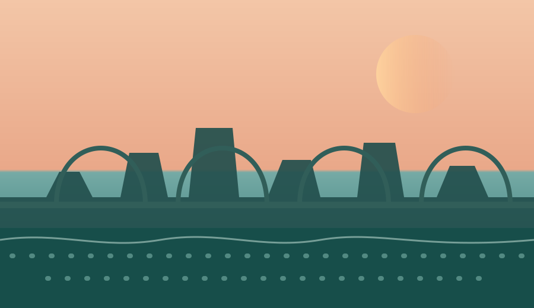

Транспорт
Общественный транспорт, маршруты и остановки

Город, который мы создаём вместе. Оцените качество городской инфраструктуры и помогите определить приоритеты развития.
Оценка основана на реальном опыте жителей Саратова и помогает определить приоритеты развития городской инфраструктуры.
Общественный транспорт, маршруты и остановки
Состояние дорожного покрытия и тротуаров
Парки, дворы, набережные и общественные пространства
Освещение улиц и ощущение безопасности
Опрос займёт около 2 минут. Поставьте оценку от 1 до 5 по каждому направлению.
на основе 1 248 ответов